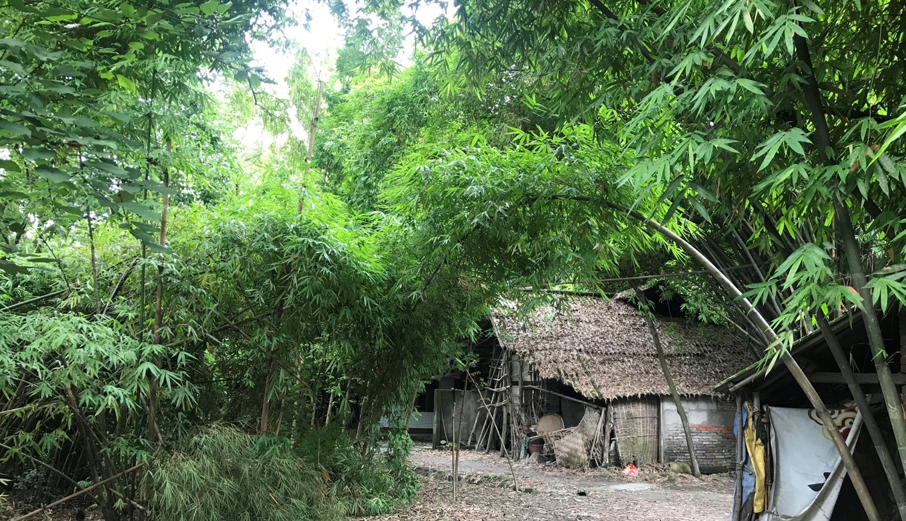
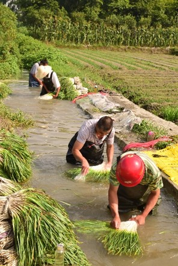
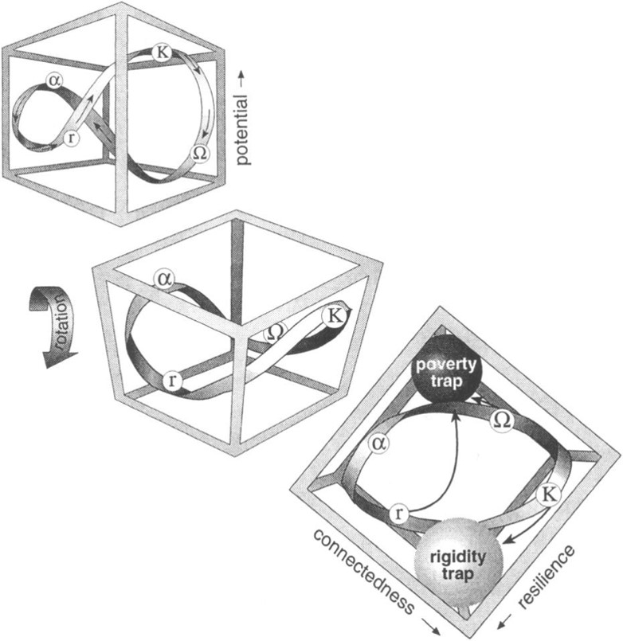
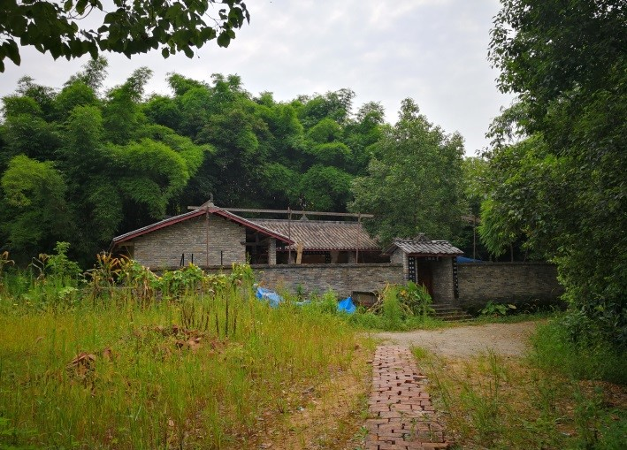
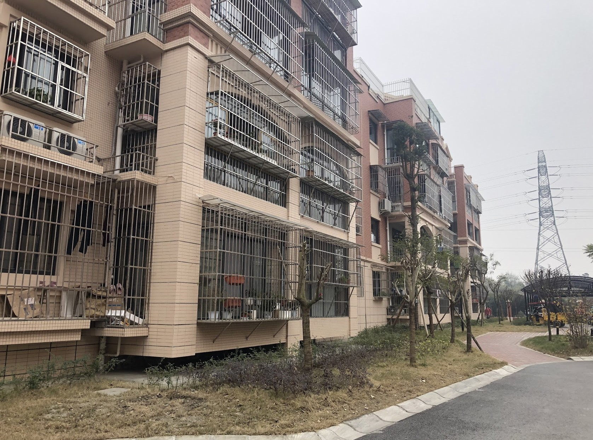
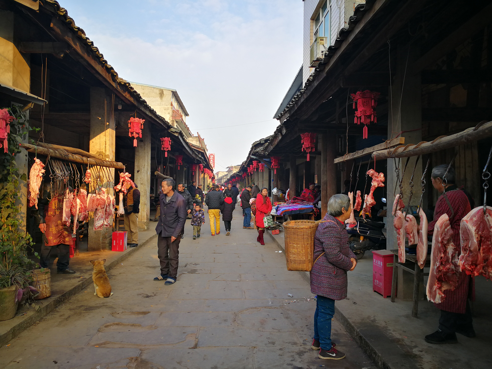
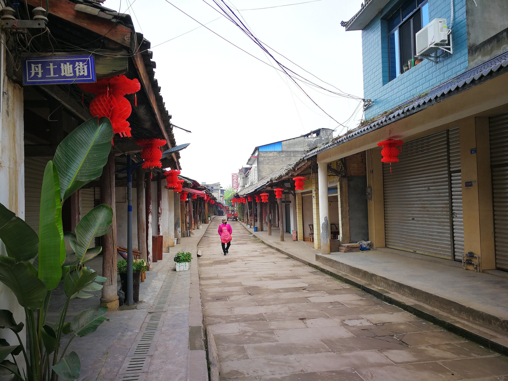
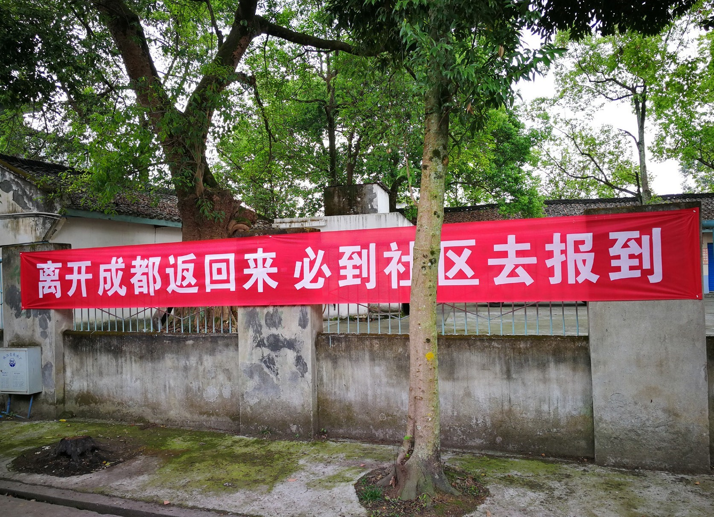

Chengdu Plain, located in Southwest China Sichuan Province, is an alluvial basin located between 103°-104°42′ E longitude and 29°31′-31°50′ N latitude, about 110 km long from north to south and 80 km wide from west to east with an area about 9,000 square kilometers (Right: Location of Chengdu Plain). The great Minjiang River, together with its tributaries, runs across the Chengdu Plain to form an expansive water network. With the elevation about 300-700 meters above sea level, the climate of this plain is typically subtropical with rich rainfall almost all year round, which provides ideal conditions for rice cultivation, home-garden development and woodland (bamboo) growing, so called “Land of Abundance”.
Linpan is a rural settlement type widely distributed in the Chengdu Plain, and is also a unique type of cultural landscape. For thousands of years, it has been the foundation of local farmers' production, life, and dwellings. Traditional s often combine elements as forests, water, fields, and houses. They are centered on farmyards, surrounded by surrounding bamboo forests or trees, and integrated with nearby farmland to form a complex socio-ecological system. Numerous linpan (wooded lots) on the Chengdu Plain are connected with water systems (irrigation channels or weir ponds), road networks and field towns to become an agriculture-based cultural landscape. Many scholars believe that the formation and development of the s is inseparable from the construction of the ancient Dujiangyan irrigation system project built in 256 BC. It is a result of co-evolution, which makes a cradle for cultivating Shu culture [5, 6], It is also the corner stone for the quality of human settlements and regional ecological security [4,7].
Linpan consists of houses, farmlands, fields, woods and roads. It forms an ecosystem complex. Many scholars believe the construction of Dujiangyan Irrigation System in 256 BC, is the cornerstone of this landscape and civilization.
The network of irrigation channels flowing down from Dujiangyan has contributed to the morphology of rural landscape, in which residential clusters (Linpan) are linked each other and local people can access water source nearby conveniently for irrigation or daily use. Because of the natural slope of Chengdu basin, water coming from the upper stream irrigates vase farming fields automatically. Thus, Linpan becomes the ingenious and finely tuned ecosystem functioning for centuries until now. It was estimated the population living within Linpan is around 4.5 million, amounting to 77% of the total rural population in Chengdu (Urban and Rural Construction Commission of Chengdu, 2007).
The concept of resilience originated from the field of natural sciences, which means the system's ability to recover from external disturbances and shocks (Holling, 1973). At present, it is generally recognized that the sustainability of human survival and well-being often depends on the resilience of society and ecosystems, and resilience is a kind of 'insurance' for human society when it is exposed to external pressures or shocks. When external pressures or shocks come, this 'insurance' mechanism can provide the socio-ecological system with enough space and time to respond, allowing the system to activate its adaptation mechanism, thereby reducing the losses caused by external shocks.
In modern urban and rural planning, people have paid more attention to improve the resilience of socio-ecological systems. At present, most of the international agendas or programs on the resilience of urban and rural areas are still focused on dealing with climate change, such as the impact of sea-level rise on coastal cities or low carbon cities (Alberti, 2009). Very few attentions were paid to the resilience or response of urban or rural societies to major public health incidents.
Now, this landscape is experiencing a great change due to the rapid modernization. For example, although Paotong village and Qinggangshu village have roughly the same population and area, Paotong remains its traditional pattern of linpan distribution but another lost the dispersed settlements due to the concentrated “New Village” living mode (see left figure and table).
The centralized living mode would not only reduce the convenience of farming activities, but also shorten the ‘social distance’, thereby increase the spreading possibility of infectious diseases in rural areas. Therefore, traditional knowledge and practice scattering settlements sparsely on the landscape should be integrated into future rural development planning so that the interval space could be maintained for better epidemic prevention.
Traditional pattern of linpan and rural markets in Chengdu Plain (surveyed by G.W. Skinner at the end of 1940s.
The periodic markets in rural Chengdu play an important role in not only economic connection of agrarian society but also providing social services such as health care as well as epidemic prevention, where administrative agencies, clinics and farmers’ associations could support the capacity building, knowledge sharing and in-time dissemination of prevention materials (e.g. face mask, disinfectant) while pandemic occurring (Below: Dantu market street in 2019).
For rural societies the epidemic events including COVOD19 have impacted the agricultural production and human life. Within a definite area the potential capacity in coping with these events is closely related to some basic conditions such as number of hospitals, doctors, hospital beds, health insurance holders, and staff working in prevention stations. Based on the official statistics, we can collect these data and calculate an integrative index relating to the prevention capacity, which could be regarded as resilience index of public health.
